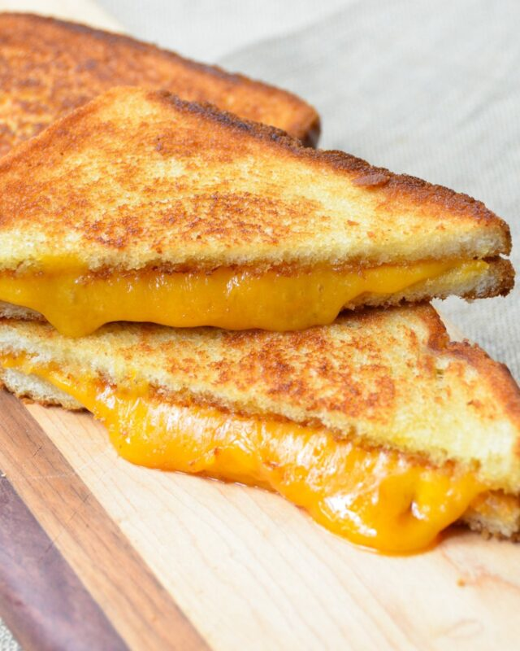

Grilled Cheese Sandwich

Description:
Bread, butter and cheese - here's how to make this classic, yet simply perfect sandwich in a nonstick pan.
Ingredients:
- 4 slices white bread
- 4 tbsp butter
- 4 slices Kraft Singles American Cheese
Steps:
- Preheat skillet over medium heat
- Generously butter one side of each slice of bread (1 tbsp butter per slice)
- Place bread with butter side down onto the skillet and add one slice of cheese to each
- When cheese starts to melt and bread is starting to lightly golden, flip cheese side of bread onto the other
- When bread starts to turn golden-brown, flip over and cook until both sides are golden-brown